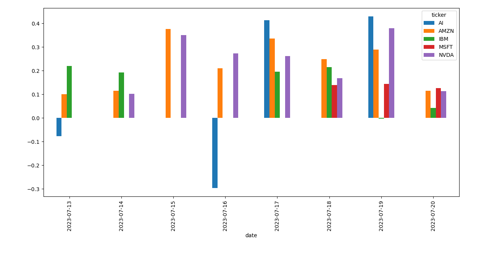

Análisis de sentimiento
de acciones de AI
En este proyecto, utilicé Python para realizar un análisis de sentimiento de noticias relacionadas con acciones de inteligencia artificial a lo largo de una semana específica (del 11 al 19 de julio). Sin embargo, el código puede modificarse para ampliar el período de tiempo y utilizar acciones diferentes.
La fuente de datos seleccionada para este análisis proviene de la plataforma Finviz, un destacado stock screener que compila en su página web noticias financieras agrupadas por compañía. Adicionalmente, seleccioné para este análisis las cinco acciones de IA destacadas en el post "Top AI stocks to buy in 2023" publicado por la conocida página de consejos de inversion The Motley Fool.
Almacenando la data
El primer paso fue acceder a la data y almacenarla. Utilizando el URL de Finviz y los tickers de las compañías seleccionadas extraje la tabla en donde se muestran todas las noticias y almacené cada una de estas tablas en un diccionario.
from urllib.request import urlopen, Request
from bs4 import BeautifulSoup
from nltk.sentiment.vader import SentimentIntensityAnalyzer
import pandas as pd
import matplotlib.pyplot as plt
from datetime import datetime
# La plataforma utilizada para acceder a las noticias
finviz_url = 'https://finviz.com/quote.ashx?t='
# Las acciones de IA utilizadas para este análisis
tickers = ['NVDA', 'IBM', 'MSFT', 'AMZN', 'AI']
# Acceso y almacenamiento de la data
news_tables = {}
for ticker in tickers:
url = finviz_url + ticker
req = Request(url=url, headers={'user-agent': 'my-app'})
response = urlopen(req)
html = BeautifulSoup(response, features='html.parser')
news_table = html.find(id='news-table')
news_tables[ticker] = news_table
Extrayendo la información relevante de la data
Para poder acceder al título, fecha y hora de cada noticia, fue necesario extraer esta información del diccionario creado. Toda esta información se pudo obtener extrayendo el texto del tag "tr". Luego, para acceder al título y la fecha/hora se realizó el mismo procedimiento usando los tags "a" y "td" respectivamente. Finalmente, estructuré toda esta información en una lista de listas en la cual por cada noticia se almacena el ticker de la empresa, la fecha, la hora y el título de la noticia.
# Extracción de información relevante de la data
parsed_data = []
today = datetime.now().date()
for ticker, news_table in news_tables.items():
for row in news_table.findAll('tr'):
title = row.a.text
date_data = row.td.text.strip().split(' ')
if len(date_data) == 1:
time = date_data[0]
else:
date = date_data[0]
time = date_data[1]
news_date = pd.to_datetime(date).date()
# periodo de tiempo
if (today - news_date).days <= 7:
parsed_data.append([ticker, news_date, time, title])
Realizando el análisis de sentimiento
Utilizando la herramienta VADER Sentiment Analysis, realizamos análisis de sentimiento a cada titular de noticias extraído. Esta herramienta nos da el grado de negatividad, neutralidad y positividad de un texto brindando como resultado un puntaje de 0 a 1 para cada una de estas categorías.
Ejemplo:
print("Polarity scores:", vader.polarity_scores("3 AI Stocks to Avoid Right Now"))La última categoría "compound" da el puntaje promedio de los resultados de negatividad, neutralidad y positividad. Esta última categoría da un puntaje que va de -1 a 1, siendo los valores cercanos a -1 una indicación de un texto más negativo, mientras que los puntajes más cercanos a 1 indican una emoción más positiva. Para este caso utilicé solo el puntaje compuesto. Primero ordene la lista creada anteriormente en un data frame y luego apliqué el análisis de sentimiento a cada titular de las noticias y agregué una columna en la cual se almacenaron los compound scores.
# Análisis de Sentimiento
df = pd.DataFrame(parsed_data, columns=['ticker', 'date', 'time', 'title'])
vader = SentimentIntensityAnalyzer()
f = lambda title: vader.polarity_scores(title)['compound']
df['compound'] = df['title'].apply(f)
Reestructurando y Preparando la data para su visualización
Primero convertí el formato de la fecha al formato utilizado por pandas para una más fácil manipulación de esta data. Luego, obtuve el promedio del compound score para cada fecha y lo agrupé según ticker y fecha. Además, cambié las filas y columnas haciendo que los valores de ticker sean columnas y las fechas se muestren como filas. Por último, utilicé un gráfico de barras para la visualización.
# Reestructuración y preparación de la data para su visualización
df['date'] = pd.to_datetime(df.date).dt.date
mean_df = df.groupby(['ticker', 'date']).mean(numeric_only=int).unstack()
mean_df = mean_df.xs('compound', axis='columns').transpose()
mean_df.plot(kind='bar')
plt.show()
Resultados
Con los resultados obtenidos podemos concluir que en la mayoría de los días las noticias relacionadas con inteligencia artificial (IA) fueron positivas para la mayoría de compañías.
Esto podría indicar que la percepción pública hacia las empresas de IA se mantiene favorable, lo que pudo haber contribuido a que Nvidia, IBM y Microsoft hayan tenido un aumento considerable en el precio de sus acciones en esta semana (20 de julio 2023, 15:47 EDT). Sin embargo, en el caso de la empresa C3.ai, esta fue la única que enfrentó noticias con un sentimiento negativo en los pasados 7 últimos días, lo que pudo haber tenido un impacto negativo en su desempeño en la bolsa. Asimismo, Amazon presentó una baja en el precio de sus acciones, lo que resulta resaltante ya que los titulares relacionadas a esta empresa fueron en su totalidad positivos.
Es importante indicar que los titulares de las noticias y el sentimiento del mercado no necesariamente reflejan los movimientos de la bolsa de valores. Aunque, la medición del sentimiento de las noticias puede ser una herramienta útil, para realizar un análisis más completo es necesario hacer uso de otros indicadores y herramientas. Adicionalmente, para poder evaluar de forma más precisa esta herramienta, sería interesante que un proyecto futuro se mida la relación que tienen los puntajes compuestos del análisis de sentimiento con el precio del día de las acciones.
